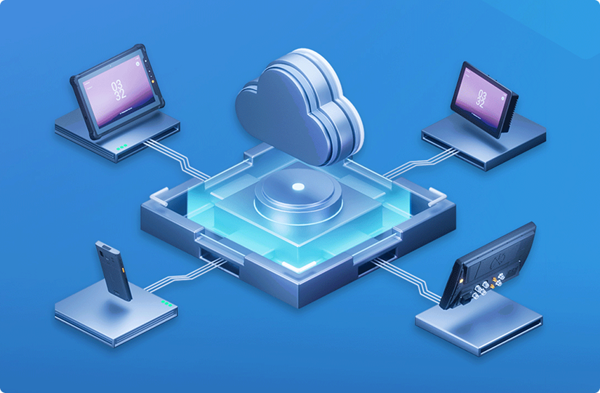
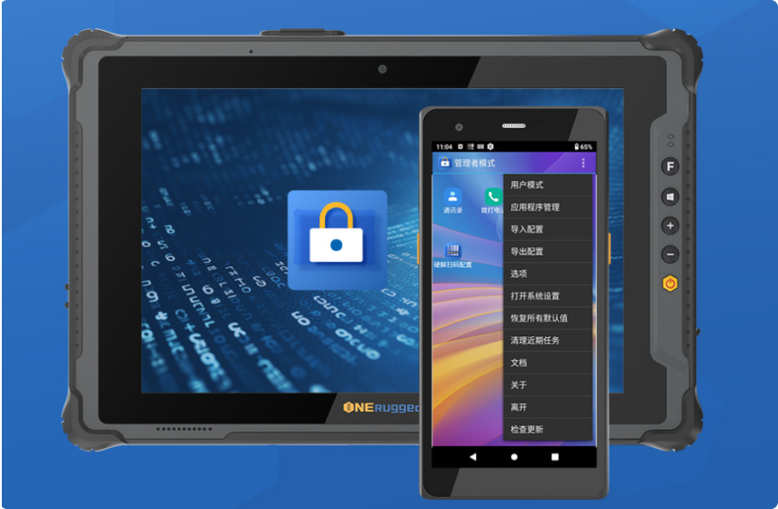
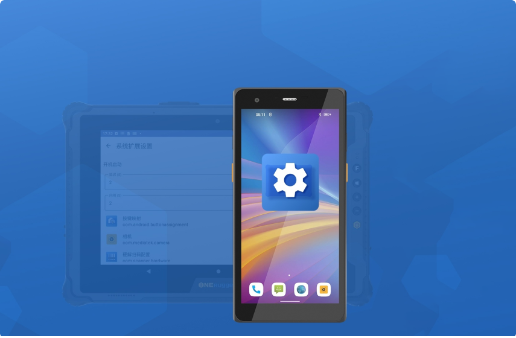
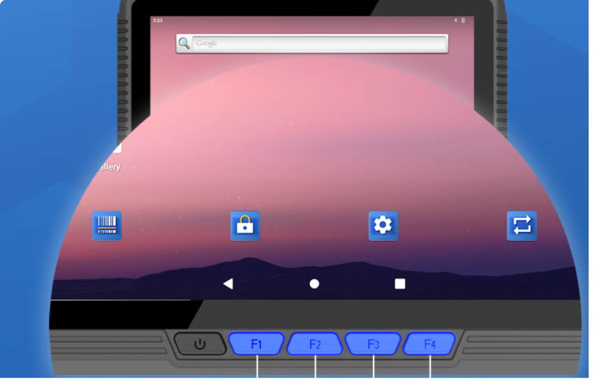
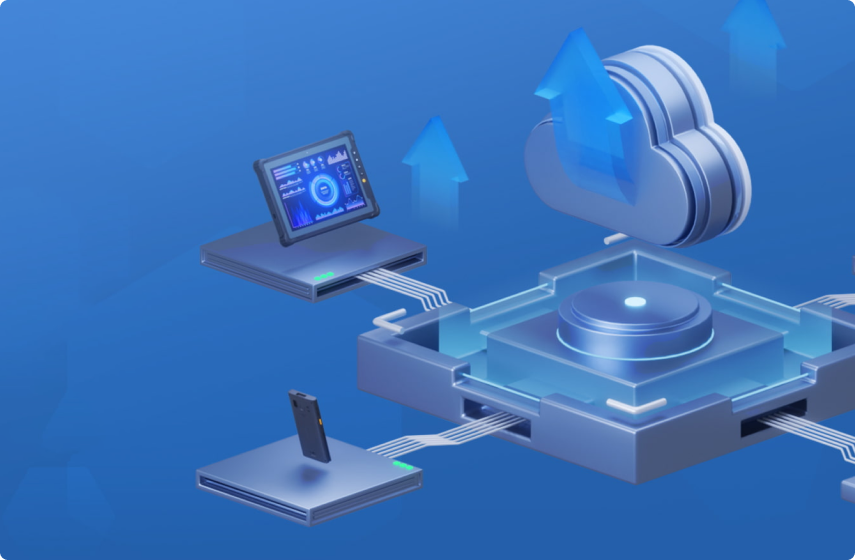
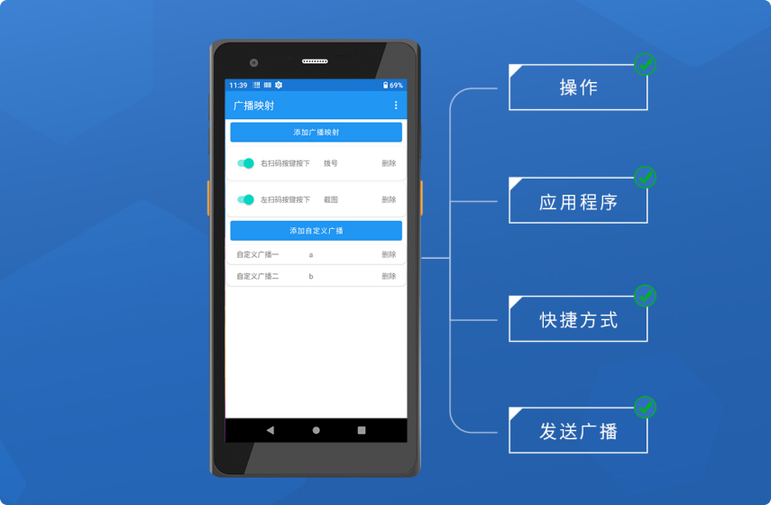
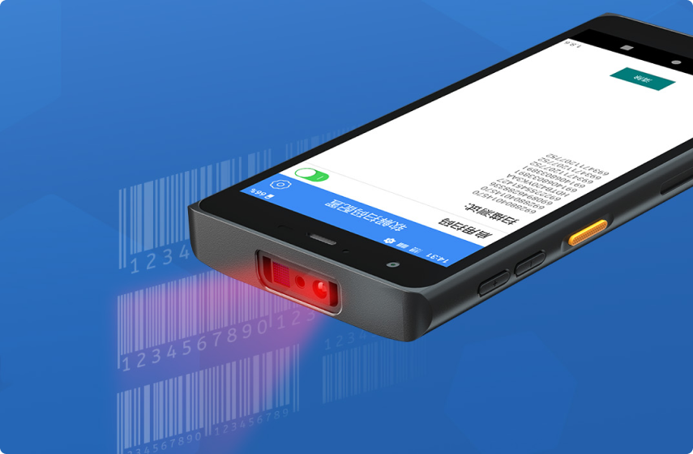

Powerful integration for your
hardware devices
Emdoor integrations enable you to connect to smart end devices and dramatically improve management efficiency and productivity
MDM
Kiosk Mode
System Extension Setup
Key Mapping
OTA Upgrade
Broadcast Mapping
Scanning Configuration

MDM (Mobile Device Management Software)
OTA upgrade tool can provide high-speed, stable and secure wireless upgrade OTA solution for device managers and users to meet the needs of system upgrades, application upgrades and other types of upgrades.

Kiosk Mode Tool
The ONERugged Kiosk Mode features usage restrictions and other capabilities, enabling enterprise administrators to limit the applications or services accessible to users during device operation. This system helps streamline interactions, enhance productivity, and strengthen security, making it ideal for application scenarios such as retail, logistics, hospitals, education, hospitality, and other industries.

System Extension Setup Tool
Yitoa's triple-defence ONERugged Android ruggedised computer products come with a pre-installed System Extension Setup Tool, which provides a series of extended additional functions and content, differentiating it from the self-contained system setup function, and allowing for a more comprehensive user experience without modifying the system source code.

Button Mapping Tool
Key Mapping Tool is one of the series of software developed by EVERDOWN Triple Defense ONERugged, which can change the functions of physical keys on Android devices by remapping them to improve the convenience of operation in different scenarios.

OTA Upgrade Tool ONERugged
OTA upgrade tool can provide high-speed, stable and secure wireless upgrade OTA solution for device managers and users to meet the needs of system upgrades, application upgrades and other types of upgrades.

Kiosk Mode Tool
The ONERugged Kiosk Mode features usage restrictions and other capabilities, enabling enterprise administrators to limit the applications or services accessible to users during device operation. This system helps streamline interactions, enhance productivity, and strengthen security, making it ideal for application scenarios such as retail, logistics, hospitals, education, hospitality, and other industries.

Code Scanner Configuration Tool
Code Scanning Configuration Tool is a software developed by Yitoa Triple Protection ONERugged for Android devices with integrated 1/ 2D code scanning head, which mainly works with 1/ 2D code scanning head hardware to provide 1/ 2D code scanning and a series of functional services.